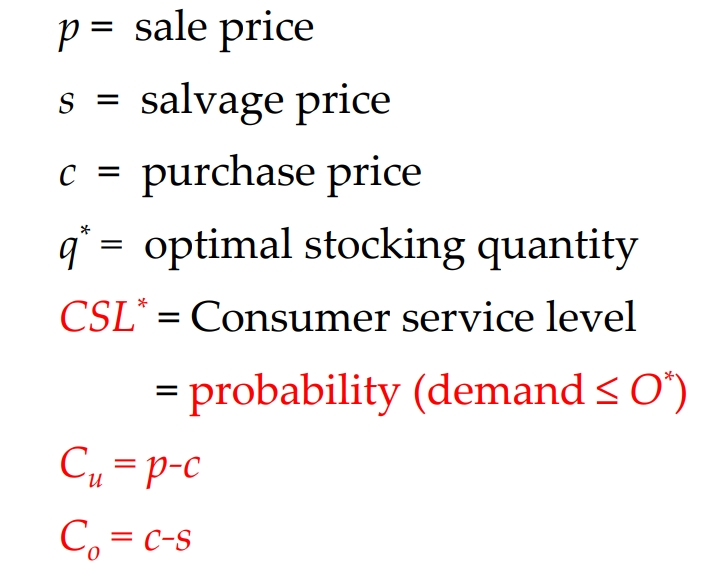
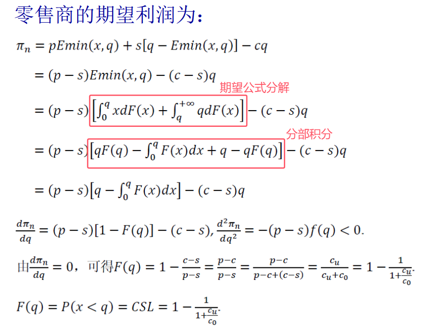
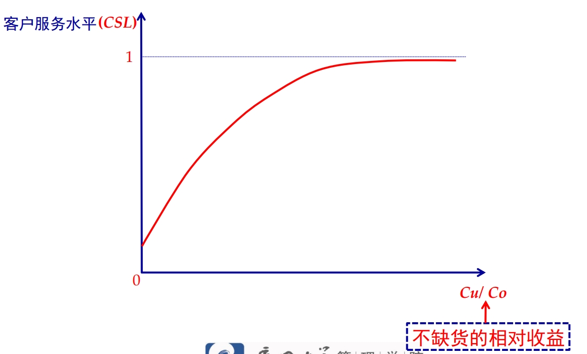
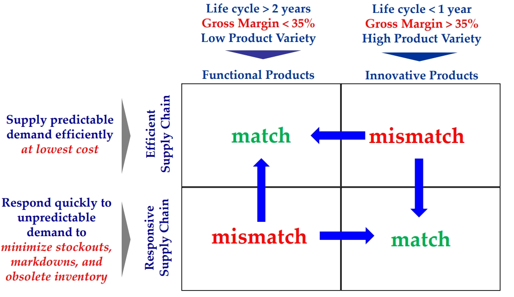
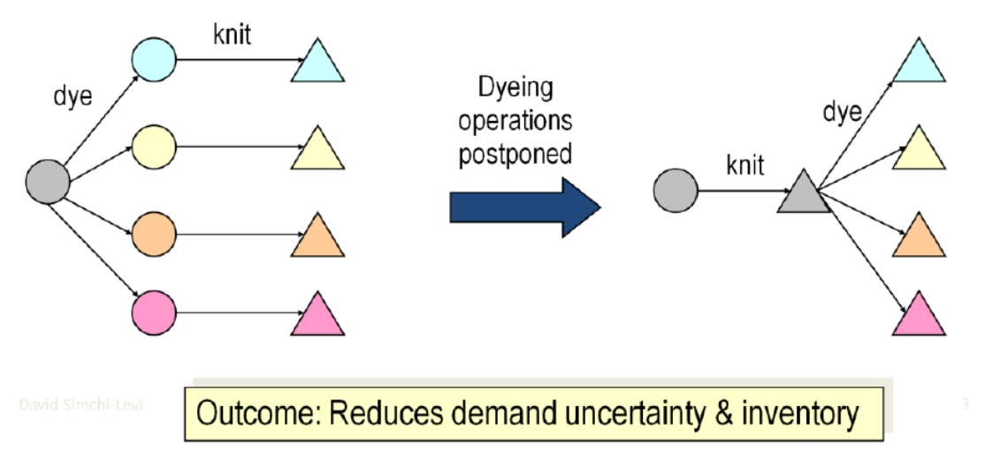
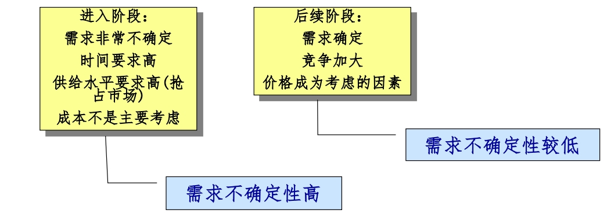

SCM - 供应链管理
构建正确的供应链
当下供应链存在问题的根源：缺乏供应链顶层设计，供应链战略和产品战略不匹配。
供应链需求的不确定性来自于两个方面：顾客需求的不确定性和供给需求的不确定性。
产品类型
产品类型可以分为功能型产品和创新型产品：
- 功能型产品(functional product)满 足基本需求，需求不随时间推移发生太大的变化(有稳定的可预见需求和很长的生命周期)。但稳定性导致了竞争，这大幅降低利润(边际利润较低)。例如，消费品中，食品饮料等多数属于功能型，服装手机等多数属于创新型；原材料、零部件等多数属于功能型，设备、定制化产品等多数属于创新型。
- 创新型产品(innovative product ) ： 创新使得公司获得很高的利润空间(边际利润较高)，但是新奇的创新使其产品需求变得不可预测 。生命周期短(经常只有几个月)， 并且创新产品享受的竞争优势不断被模仿者侵蚀 ，这被迫使公司需要源源不断的创新 。生命周期短和产品种类繁多，导致其更高的不可预测性。
评估最优的客户服务水平

\(C_u\) 表示售出产品得到的利润，\(C_o\) 表示卖不出去剩下产品的损失(购入的价格减去产品的残值一般是负数)。接下来推导最优的订货量：

其中 q 表示订货的数量，x
表示需求量。根据最后需求的概率分布函数和 \(C_u, C_o\) 的关系可以得到：

供应链类型
供应链的两类功能：
- 物理功能——盈利能力：以最低的成本将原材料加工成零部件、半成品、产品并将它们从供应链的一个节点运到另一个节点。
- 市场调节功能(供需不匹配成本)——反应能力：当供需不平衡时，与“市场调节功能”相关的成本产生；如果供给大于需求，在供应链中出现库存成本(资金挤压成本、贬值甚至报废)；如果供给小于需求，损失销售机会和市场份额(缺货成本，紧急发货成本、罚款、订单取消甚至终止协议)。对市场需求做出迅速反应，确保以合适的产品在合适的地点和合适的时间来满足合适的顾客需求。
设计理想的供应链战略
四种供应链策略和产品类型的组合：

左上角和右下角的策略分别是，具有成本优势的高效供应链匹配功能性产品，也就是库存水平可能会比较高，但是由于功能性产品的需求比较稳定，所以可以通过薄利多销来获取较多的利润，但是不适合快速相应的供应链策略，因为缺货成本会比较高；右下角的策略是，具有快速响应的供应链策略匹配创新型产品，也就是类似于及时生产(JIT)，通过快速响应而不是积压库存来满足需求，因为需求是不确定的，这时的缺货成本会小于构建快速响应供应链的成本。
右上角单元格(创新型产品-高效供应链)：生产和销售创新性产品的公司从投资改善供应链快速反应中得到的收益比关注供应链效率(供需不匹配导致库存过剩被迫降价)得到的收益要高很多。向左移动的明确信号是产品线具有频繁生产新的产品，种类繁多，利润很低的特点。
对于创新型产品没有快速反应的供应链，正确的解决办法：
- 让产品成为功能型产品(若边际利润较低，误将功能性产品认为创新性产品)。
- 为创新型产品建立快速响应型供应链(若边际利润确实较高，该产品就是创新性产品)。
总结：至于朝哪个方向迁移，要平衡迁移产生的额外利润和供应链成本。
要走出左下角的单元格就应该构建高效的供应链，而不是快速响应的供应链。
电商大多销售功能型产品，却追求响应型供应链的原因是为了扩大市场份额，即使多年亏损，电商仍能获得投资者的持续投资。
功能性产品的有效计划(连续补货计划)：通过和销售商进行信息共享，获取销售商和自身的库存信息，从而减少货物的交付时间。
过度价格促销的弊端。利用价格促销满足每季度收入。但是，拉动需求只能用一次。下个季度， 公司不得不再次拉动前向需求来弥补第一次促销的减少。弊端就是原本可预测需求变成了一系列的尖峰，这样只能增加成本。
重要原则：“天天平价”策略。功能型产品供应商可以预测顾客需求以换取最好的产品和合理的价格。
创新型产品的响应供应：接受不确定性是创新性产品的固有特性。对于创新型产品，不确定性必须被接纳。如果产品的需求可以预测，该产品就没有足够的创新以获得高利润。
管理不确定性：
- 降低需求不确定性(reduce uncertainty)。例如，通过寻找新的数据源；组件通用性(不同产品共享相同组件)以便对组件需求变得更加可预测。
- 避免交货时间不确定性(avoid uncertainty)。增加供应链灵活性以定制产品，及时准确的生产预测。
- 用缓冲库存规避不确定性和生产过剩的冲击(hedge uncertainty)。
很多企业意识到供应链存在问题却不知道该如何解决的根本原因在于：供应链和产品策略失调；难以重新调整供应链。
结论：
- 功能型产品具有可预见性需求，寿命周期较长，边际收益率低，产品种类少，按时完成生产的预测的平均偏差率低，平均脱销率低，按单生产产品所需的提前期较长。
- 创新型产品具有不可预见性需求，寿命周期较短，边际收益率高，产品种类多，按时完成生产的预测的平均偏差率高，平均脱销率高，按单生产产品所需的提前期较短。
供应链也分为成本有效型与快速响应型供应链：
- 成本有效型供应链的主要目标：以尽可能低的成本有效地供应可预见性需求，其生产重心是维持较高的平均利用率，库存策略是提高周转率，通过供应链最大程度地减少库存；只要不增加成本便尽量缩短生产提前期；根据成本和质量选择选择供应商。其产品设计方案应放在使产品性能最大化，使成本最小化。
- 快速响应型供应链的主要目标：为了最大程度地减少脱销量、被迫降价产品和过期库存，对不可预见性需求做出快速反应。生产重心放在生产额外缓冲产品；其库存策略在于安排成品(或部件)的重要缓冲库存；为了缩短生产提前期而积极主动地投资改进方法；根据速度、灵活性和质量选择供应商；运用组件设计，尽量延长产品出现实质性差异的时间。

影响供应链战略匹配的其它因素
在产品和顾客群多种多样的情况下，如何创建一条在赢利水平与反应能力之间平衡的供应链。单独建立每种产品(每个顾客群)的供应链，还是将供应链建成适合所有产品和顾客群？同一产品配送不同顾客群体？不同产品配送到相同顾客群体？集中库存还是分散库存？
产品生命周期：随着产品走过其生命周期，产品需求特点和顾客群的要求也会发生变化。公司要维持战略匹配，就必须在不同生命阶段，调整其供应链。

- 竞争性随着时间变动：竞争焦点在于以合理的价格生产出品种丰富的产品。由于竞争格局发生变化，公司不得不调整其竞争战略(大规模定制导致更多竞争者进入)。由于竞争战略随时间发生变化，企业必须改变其供应链战略，以维持战略匹配。
牛鞭效应：供应链上的一种需求变异放大现象，使信息流从最终客户端向原始供应商端传递时，无法有效地实现信息共享，使得信息扭曲而逐级放大，导致了需求信息出现越来越大的波动，此信息扭曲的放大作用在图形上很像一个甩起的牛鞭，因此被形象地称为牛鞭效应。
产生牛鞭效应的根源：终端信息无法共享而导致库存量的放大。
减轻牛鞭效应的核心思想：让供应链上的每个环节都能清晰看见最终消费者行为。